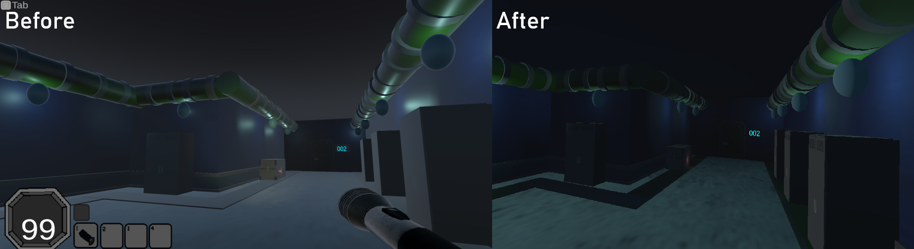

FLOODGATE DEVELOPMENT UPDATE
October 2026
Floodgate development has been going pretty well recently.
And I've got a few things to talk about!
The biggest news is that Floodgate has officially entered its second act of development.
Which is a weird thing to say.
Anyway.
We're in the Second Act!
So, what does that actually mean?
Well, I've been working on more of the later areas of Floodgate, adding new mechanics, improving older rooms, and generally trying to make the game feel more like an actual game instead of a very large collection of hallways.
Which is good.
Because I would really prefer not to spend the next several months making hallways.
Although knowing me, that's probably still going to happen.
There's still a lot to do, obviously.
But that's still pretty cool.
Floodgate Looks Different Now!
One of the bigger things I've been working on recently is the game's shaders and overall visuals.
I've gone back through some of the older areas and improved their lighting, materials, and general atmosphere.
And I think it makes a pretty noticeable difference.

Previously, some of the rooms felt a little too bright and flat. They worked, sure, but they didn't always have the atmosphere I wanted.
So I've been messing around with the shaders, adjusting the lighting, and generally making the facility look a bit more... well...
Like a place I probably wouldn't want to visit.
Which is kind of the point.
The rooms are darker now, the lighting has more contrast, and the environments feel a little more intimidating.
I've also made important objects glow, so keycards, puzzle components, and other interactable things don't just disappear into the darkness.
Because there's a difference between making a room creepy and making the player spend fifteen minutes looking for a keycard sitting directly in front of them.
I'm trying to make the first one happen.
Not the second.
Hopefully.
MORE PUZZLES!!!
I've also been working on adding more puzzles throughout the facility.
One of the newer ones involves connecting wires between matching connectors.
You look at a wire, grab it, drag it over to the correct connector, and connect the two together.
A door moves, and you can continue exploring.
I've already added this puzzle to multiple rooms, and I think it's a nice addition.
It gives the player something else to do besides walking through doors.
There are still plenty of things I want to add and improve with the puzzles, but I'm happy with how they're turning out so far.
Going Back Through Older Areas
Something else I've been doing is revisiting older sections of Floodgate.
This is something I probably should've been doing more of earlier, honestly.
When you're developing a game for a long time, it's easy to get caught up in making the next room, then the next room, then the next room, and suddenly you've got a bunch of older areas that don't quite match the quality of your newer ones.
So I've been going back and improving things.
Better lighting.
Better materials.
More atmosphere.
Small changes that make the rooms feel more consistent with the rest of the game.
It's not always the most exciting work in the world.
Sometimes you spend an hour adjusting lighting and the end result is that a wall looks slightly less shit.
But those little improvements add up.
And I'd rather have a game where the entire facility feels like one place than a game where the first ten rooms look like they belong to a completely different project.
So... What's Next?
More development!
I know. Incredible announcement.
For now, I'm going to keep working through the later areas, improving older rooms, adding puzzles, and making sure everything fits together properly.
There's still a lot left to do, and I'm not going to pretend Floodgate is almost finished just because I've entered another stage of development.
But things are moving forward.
And that's what matters.
Floodgate has come a long way from being a bunch of ideas and random Unity scenes, and I'm looking forward to seeing how much further I can take it.
See ya.